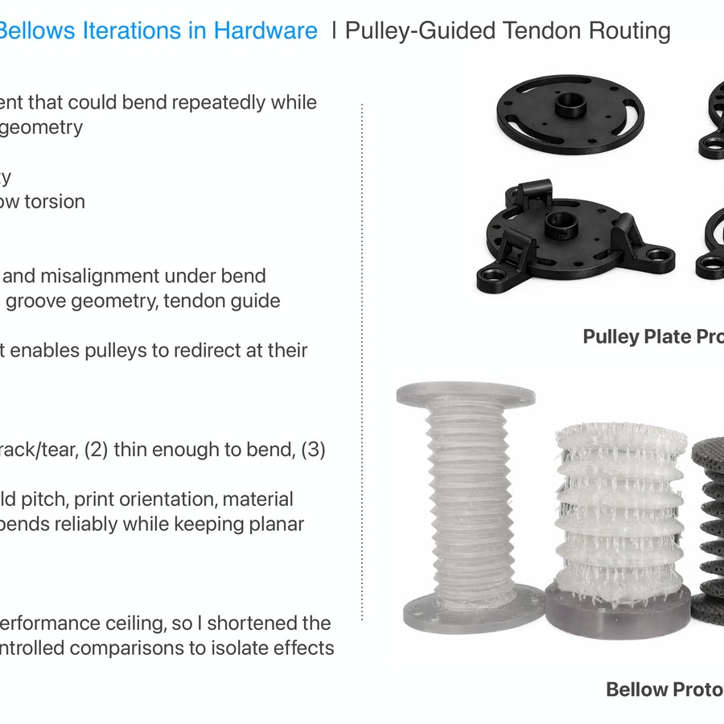

Research & Projects
My research sits at the intersection of soft robotics, compliant mechanisms, and fabrication. I am interested in how geometry, material behavior, and embedded sensing can create robotic systems that are safer, more adaptive, and easier to manufacture.
 Pulley-guided tendon routing
Pulley-guided tendon routing
 Smart fluidic windows
Smart fluidic windows
 Shape-morphing tensegrity structures
Shape-morphing tensegrity structures
 Robust contact acquisition and flow control
Robust contact acquisition and flow control
 Fabrication and design studies
Fabrication and design studies

Pulley plates and bellows iterations